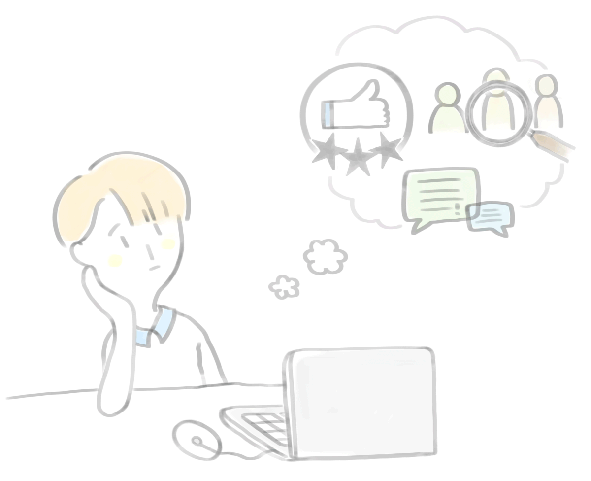

뇌가 활동을 절약할 방법을 끊임없이 찾기 때문에 습관이 생성된다.
습관이 형성되면 생각을 하지 않아도 행동하게 되므로, 뇌에 휴식을 주게 된다.
습관이 중요한 이유는 대부분의 선택이 습관이기 때문이다. 처음은 의식적 일지라도 어느 순간부터는 무의식적인 행동으로 바뀌어있다.
“생활은 습관이 짜낸 천에 불과하다.” - 헨리 프레데리크
“습관은 인간 생활의 위대한 안내자이다.” - 데이비드 흄
습관은 생각보다 삶에 많은 영향을 미치며, 우리의 허락 없이 나타나지만 의도적으로 만들어 갈 수도 있다. 이러한 습관의 특징을 이용하여 탄생한 마케팅이 ‘습관 마케팅’이다.
“소비자들의 행동 가운데 95%는 무의식적 사고에 의해 결정된다.” - 닐 마틴
습관 마케팅은 소비자의 생활패턴을 파악하여 욕구를 자극해 구매를 ‘습관화’시키는 마케팅이다. 소비자에게 의도적으로 습관을 만들게하여 장기 고객을 확보 및 브랜드 충성도를 제고하려는 전략이다.
건강 기능 음료 ‘식후 비법 W’는 제품 이름 자체에 섭취 시간대를 알려주는 식후라는 이름으로 소비자들이 식사 후에 음료를 마시는 습관을 강조한다.
샘표의 ‘질러 엔돌핀이 필요한 오후 3시’.
규칙적인 건강 관리를 하지 못하는 2030세대를 타깃으로, 관심을 가질 수 있는 영양소 및 효능을 강조하고 시간대별 건강한 습관을 제시한다. 각 시간대에 초점을 맞춘 마케팅으로, 해당 시간이 되면 제품을 떠올릴 수 있도록 만든다.
몇 달에 한 번씩 ‘맥도날드’에서 무료 커피 행사를 진행한다. 사람들은 무료 커피를 마시면서 색다른 경험을 하게 되고 무의식적으로 습관화하기 시작한다. 습관에 구매가 좌우되는 것, 이것이 행사의 목적이다.
아이스크림 브랜드 ‘베스킨라빈스’는 31일에 패밀리 사이즈(5가지 맛)을 구매 시 하프갤런(6가지 맛)으로 업그레이드를 해주는 이벤트를 진행한다. 또한 이벤트에 누적 참여 시, 누적 횟수에 따라 다양한 혜택을 제공한다.
무료 마케팅은 제품이나 서비스를 쉽게 접하게 하고 이벤트와 서비스를 이야기하고 공유하게 하여 브랜드에 대해 긍정적인 이미지를 심어준다.
한국야쿠르트 간편식 브랜드 ‘잇츠온’은 간단한 아침 식사를 강조하는 정기배송 마케팅을 진행한다. 소비자들에게 건강한 습관을 형성하게 하기 위해 주기적으로 제품을 배송, 규칙적으로 제품을 이용할 수 있도록 한다.
‘스타벅스’의 성공 요인은 좋은 원두나 감성적 접근 때문이라는 분석도 있지만, 사실 편의상을 통한 습관의 형성이라고 볼 수 있다. 찾기 쉽고 접근하기 쉬운 스타벅스 매장에 길들여진 사람들은 습관적으로 스타벅스를 가게 된다.
‘페이스북’의 로고와 UI는 한눈에 알아볼 수 있듯 룩앤필(look and feel)이 데스크탑과 모바일에 일관되게 흐른다. 일관성은 습관 형성을 목표로 디자인할 때 지켜야할 원칙으로, 페이스북은 이 원칙에 대단히 충실한 예이다.
습관 마케팅은 떠오르는 마케팅 유형으로서 중요한 의의를 두고 있다.
“지금 전 세계에서는 습관 쟁탈 전쟁이 벌어지고 있습니다. 여기서 승리한 기업은 대박을 터트릴 것이며, 실패한 기업은 존망을 걱정해야 합니다.” - 찰스 두히그, 뉴욕타임스 기자
습관이라는 것은 결국 브랜드의 신뢰성을 결정하는 가장 큰 요인이기 때문에, 소비자가 습관을 바꾸지 않는 한 그들의 신뢰성은 쉽게 무너지지 않는다.
습관 마케팅은 여러 유형으로 활발히 이루어지고 있지만, 이 외에도 고객을 유치할 수 있는 마케팅 방안에 대한 연구가 필요하다. 보다 폭넓은 장기적인 소비자 확보를 위해 제품력 및 마케팅에 차별력을 주어야 한다.